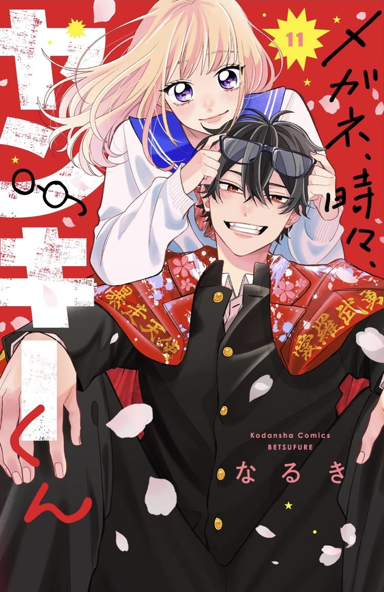
Destaque Trailer
Megane, Tokidoki, Yankee-kun ganha 1º trailer e confirma estreia!
O site oficial da adaptação em anime liberou o 1º trailer para a obra. O video traz detalhes da história...

O site oficial da adaptação em anime liberou o 1º trailer para a obra. O video traz detalhes da história...
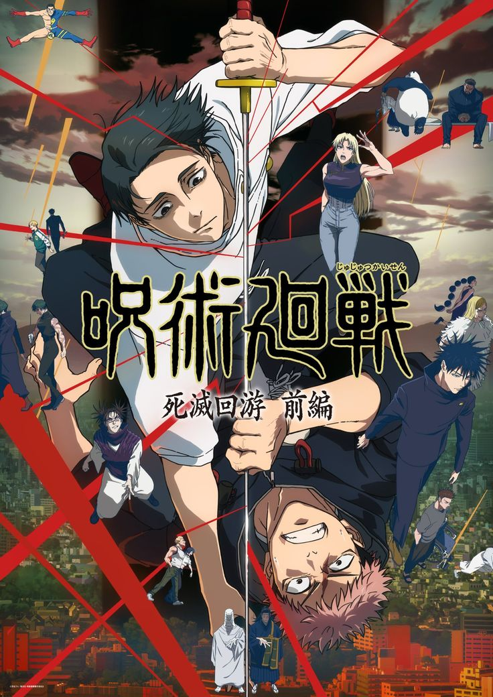


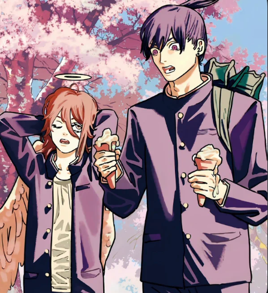

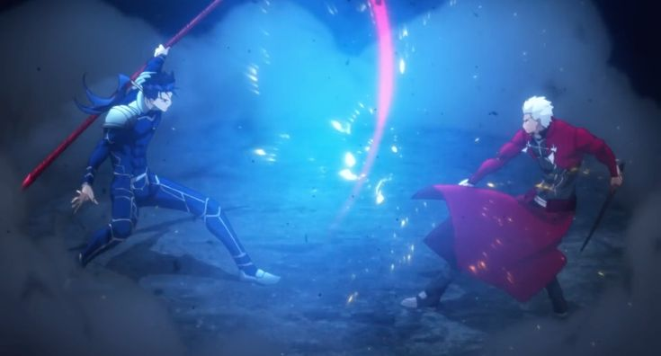
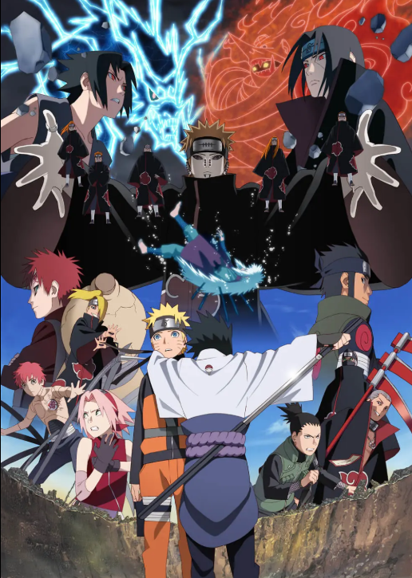
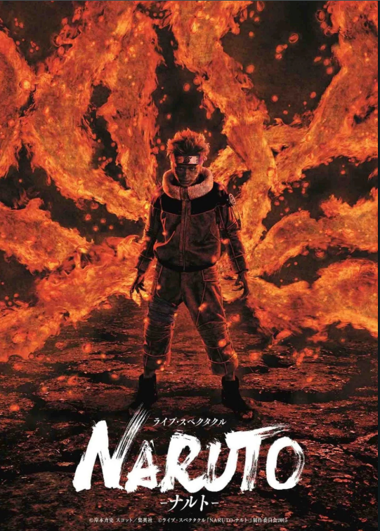

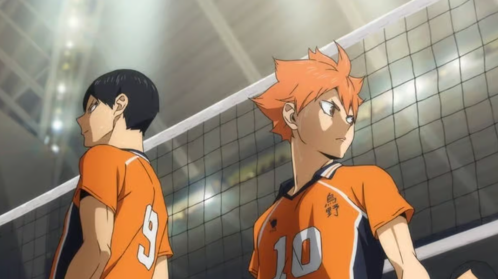
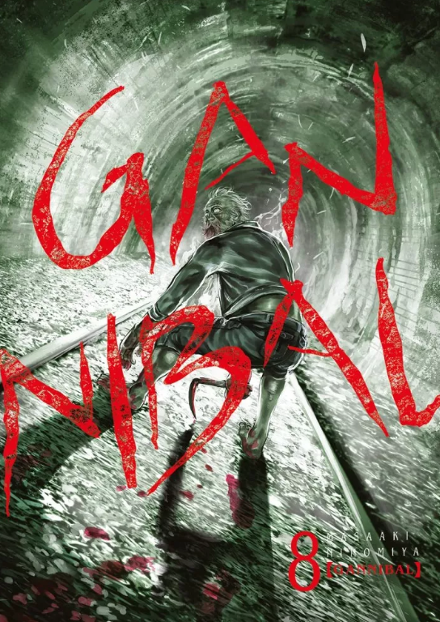
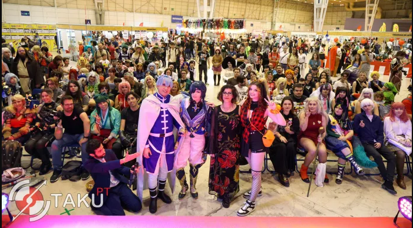
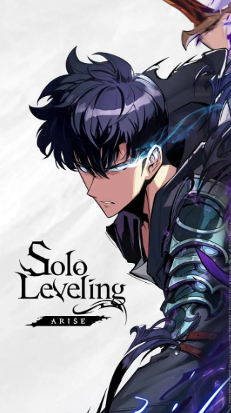
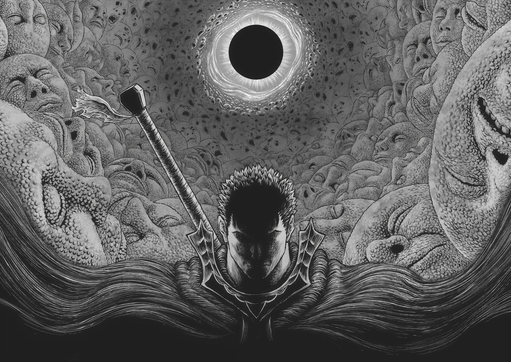
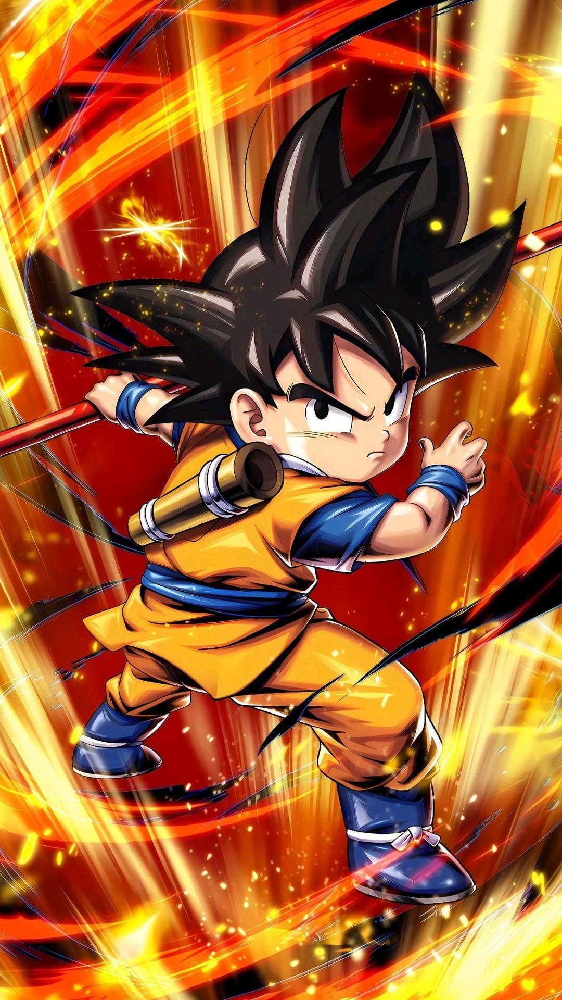
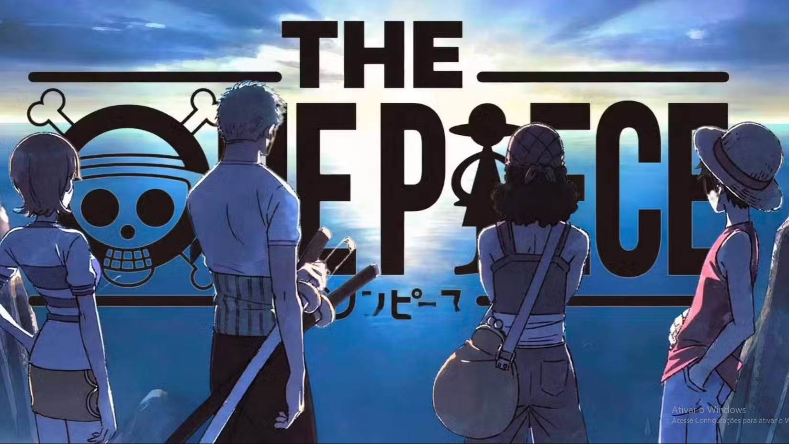
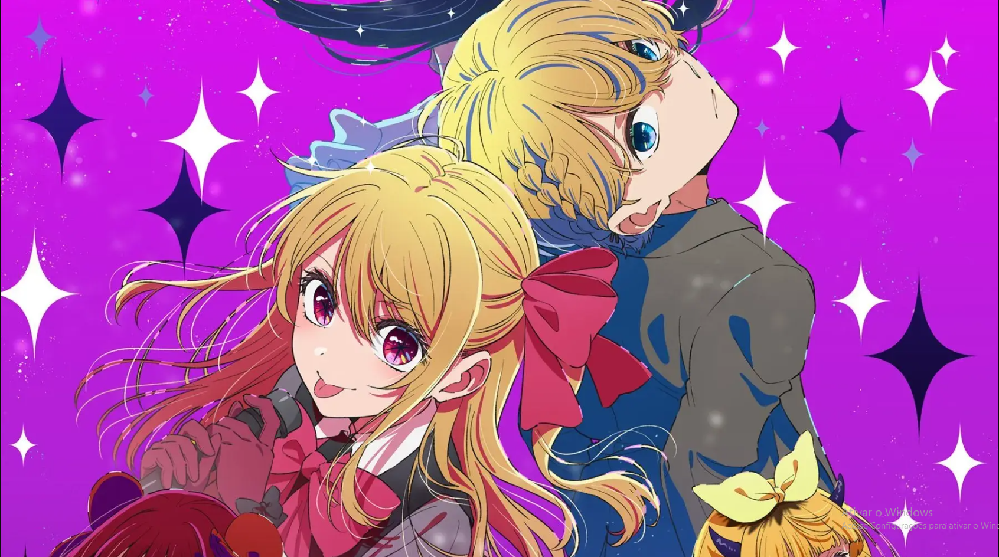
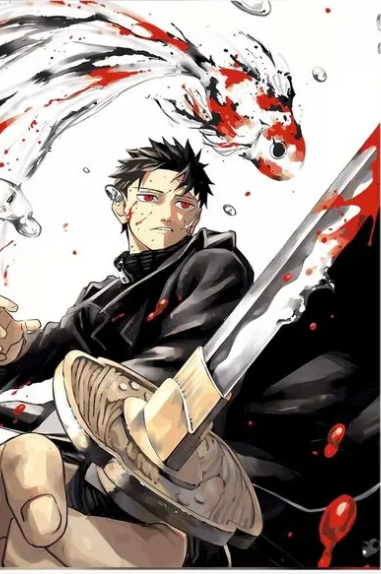
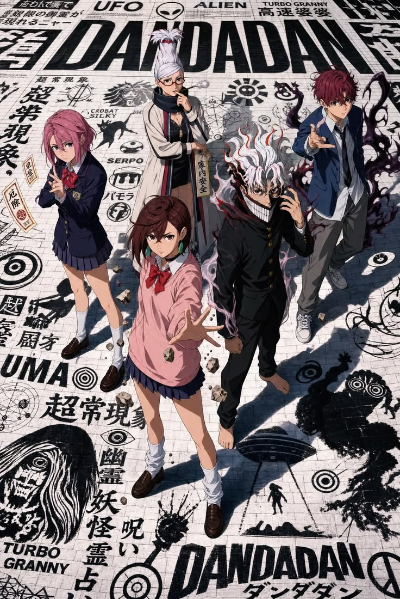
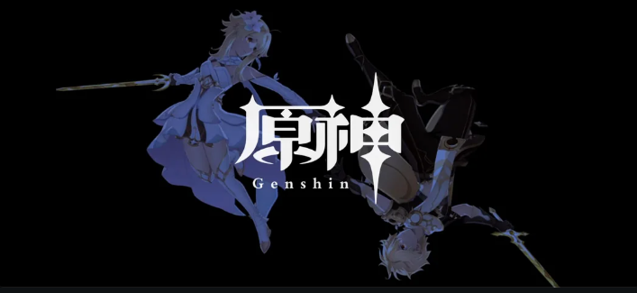
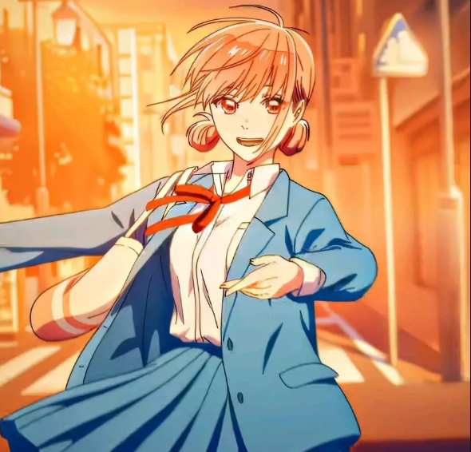
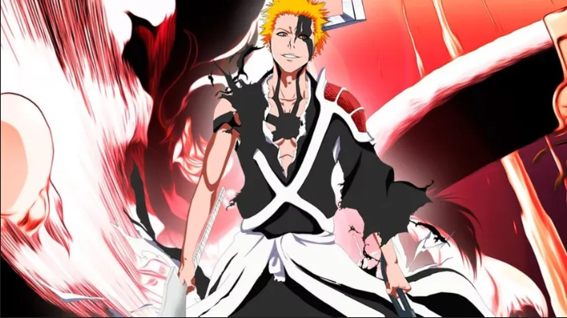
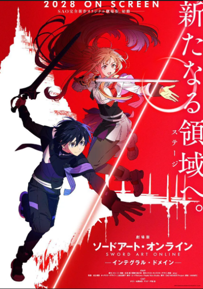
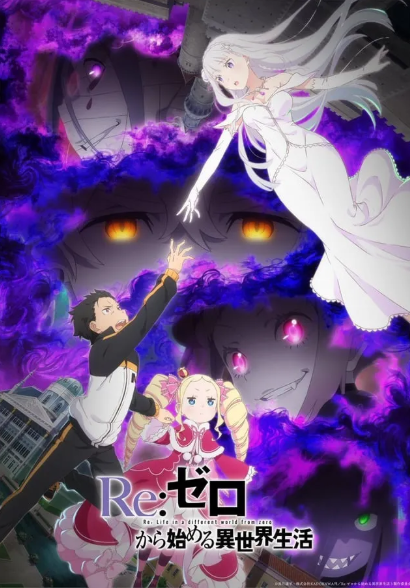
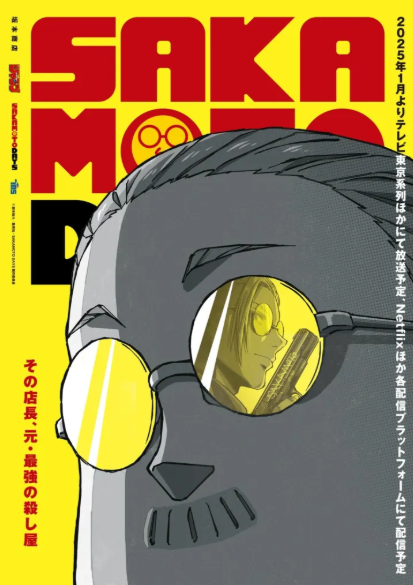
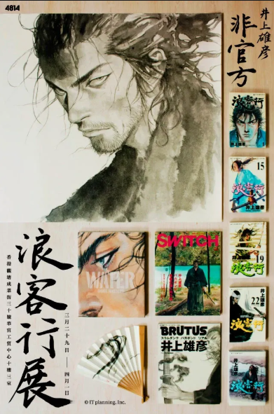